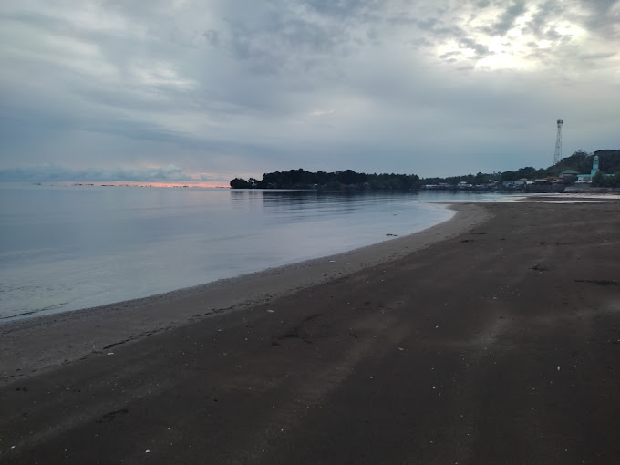
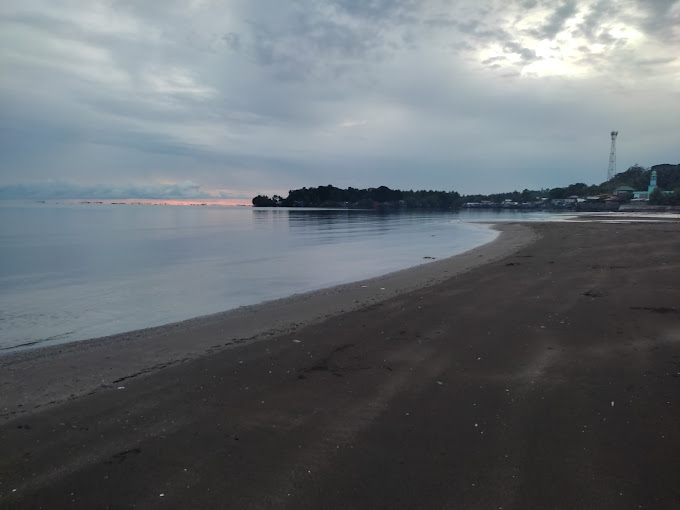

Baybay Beach
Baybay Beach in Kolambugan, Lanao del Norte, is a charming coastal spot known for its inviting brown sand and tranquil atmosphere. The beach offers a relaxed setting where visitors can enjoy the sun and sea. It's a great place for families and friends to gather, offering a blend of natural beauty and local culture.
Poblacion Beach
 

The Poblacion Beach in Kolambugan, Lanao del Norte features a small bridge where visitors can take pictures. The view at this beach is fantastic, especially during sunset.
Dapit Alim
The Dapit Alim in Simbuco, Kolambugan, Lanao del Norte is a church that serves as a place of prayer for the community. It is more than just a simple church, as it also features beautiful spots and simple infrastructure for visitors to explore and enjoy.